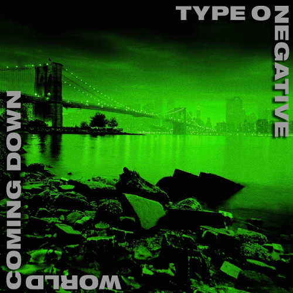

Slow, Deep and Hard [1991]

Slow, Deep and Hard is the debut studio album by the American gothic metal band Type O Negative, released in 1991 on Roadrunner Records. The album, originally titled None More Negative and released in 1990 under the group's former name Repulsion, launched the band's career. Slow, Deep and Hard is a darkly humorous, semi-autobiographical album with tracks 1, 3, 4 and 7 based on a failed relationship of vocalist/bass guitarist Peter Steele
According to guitarist Kenny Hickey, Steele based the main riff of Gravitational Constant: G = 6.67 × 10−8 cm−3 gm−1 sec−2 (later known as "Gravity") from the theme song of the 1964 American sitcom The Munsters.
Roadrunner Records released a remastered version of Slow, Deep and Hard on March 24, 2009.
For the 30th anniversary of Slow, Deep and Hard, Roadrunner Records, in conjunction with Run Out Groove, reissued the debut on vinyl.
Bloody Kisses [1993]

Bloody Kisses is the third studio album by the American gothic metal band Type O Negative and the last recording with their original lineup as drummer Sal Abruscato left in late 1993. The album includes one of their best known songs, "Black No. 1", which earned the band a considerable cult following
The album further established recurring motifs of the band's music, such as including cover songs recorded in the gothic metal style, sample-heavy soundscapes in between songs, and lyrics replete with dry, satirical humor.
Bloody Kisses is notable for being the first album released on Roadrunner Records to achieve gold certification.
October Rust [1996]

October Rust is the fourth studio album by Type O Negative. It was released in 1996.[5] This is the first album with Johnny Kelly credited as the band's drummer, although programmed drums are used on the album. October Rust has more ballads and less of the doom metal sound of previous or subsequent albums. It also features a very heavy cover of Neil Young's "Cinnamon Girl".
Production
- Mike Marciano - recording engineer
- George Marino - mastering
- Sagmeister Inc. - cover art
- Tim Fitzharris - photography
- Joseph Cultice - photography
- Tobias Frere Jones - typography
- Laura Michaels - design
It is the first of the band's albums with a "joke intro"; in this case, "Bad Ground", which is 38 seconds of low-level buzzing, meant to sound as if one or more audio leads is incorrectly plugged into the input jacks of an amplifier.
World Coming Down [1999]
World Coming Down is the fifth studio album by the American gothic metal band Type O Negative. It is considered to be the darkest of the band's releases,having been written after a series of deaths in frontman Peter Steele's family, combined with the desire to break away from the sexually charged themes of the previous albums.It was also the band's first album to reach the Top 40 on the Billboard 200.
Life is Killing Me [2003]
Life Is Killing Me is the sixth studio album by gothic metal band Type O Negative. It was released on June 17, 2003, and was their final studio album released through record label Roadrunner Records.
The album's title and content refers primarily to frontman Peter Steele's dissatisfied life outlook and experiences with mental illness at the time of writing and production, with lyrics concerning relationship problems and the illness and death of his parents.
The album reached No. 39 on the US Billboard 200 chart, selling 27,000 copies in its first week, and received positive reviews from music critics, who noted a more melodic sound in comparison to previous records. "I Don't Wanna Be Me" was released as a promotional single, for which a music video was produced.
Dead Again [2006]

Dead Again (stylized as DЭДD ДGДIИ) is the seventh and final studio album by the American gothic metal band Type O Negative, released before the death of frontman Peter Steele in 2010, and subsequent dissolution of the band. It was released on March 13, 2007, through record label Steamhammer, a subsidiary of SPV.
Production
The band uses studio drums instead of a drum machine for the first time since their third album, Bloody Kisses. Thus, it remains the only Type O Negative studio album with Johnny Kelly's actual playing, as he was only "credited" as the drummer on the three albums prior to Dead Again.[3]